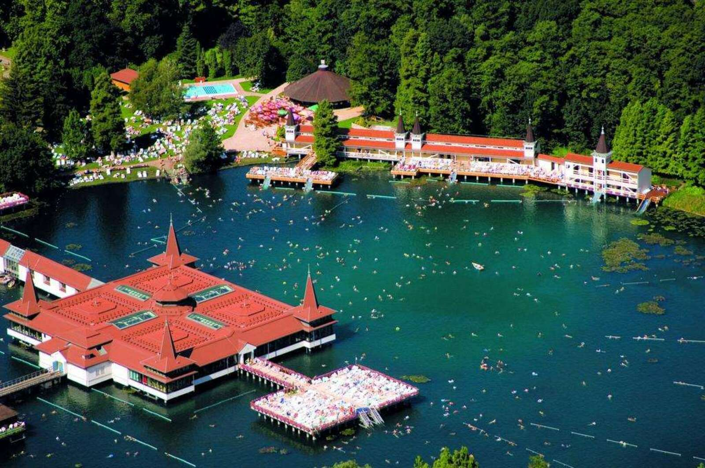
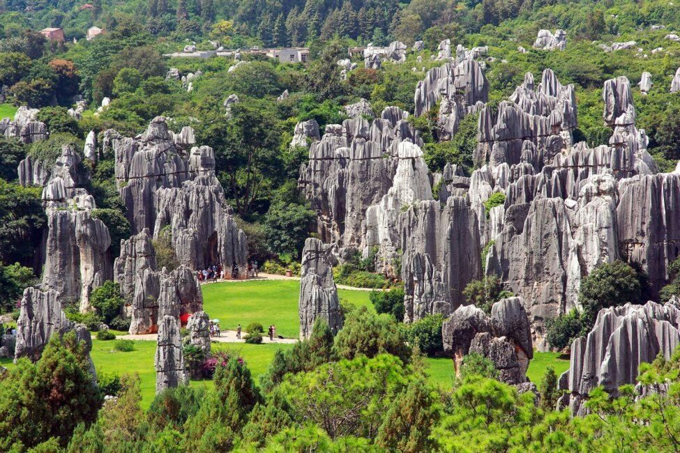

У природы есть необычная сила - удивлять. В высоких горах, обширных лугах и огромных океанах можно найти настоящие природные чудеса. Но иногда наш мир открывается не просто удивительным, а и очень странным. Далее будут показаны самые странные уголки на нашей планете.

Озеро Хевиз является крупнейшим термальным озером в Европе и местом для тех, кто хочет поправить здоровье, купаясь в его целебных водах. В озере живет огромное количество синих, зеленых водорослей и бактерий, которые лечат недуги людей.
Китайский пейзаж, в котором скалы стоят, словно высокие сосны. При этом скал так много, что это место называют лесом Шилинь. Высокие скалы еще иможно сравнить с небоскребами, образующими город.
